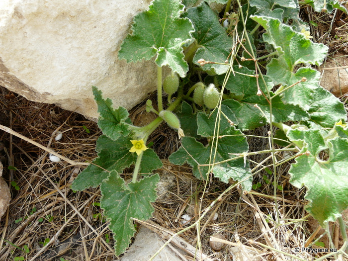
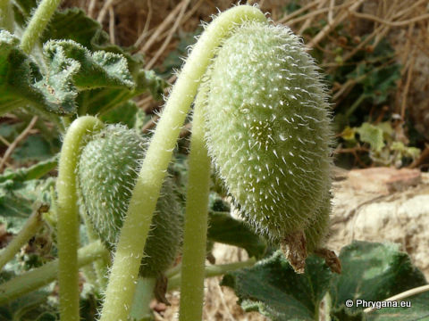

| PHRYGANA | Fauna | Flora |
additions nouveautés |
espèces species |
contact -
info - commentaires phrygana1 (at) gmail.com |
| Particularités crétoises | Galles et mines |
| Ecballium elaterium (L.) RICH. |
| 190 | Flora | CUCURBITACEAE | Ecballium RICH, A. |
 Ecballium elaterium Rethymno (forteresse) 14 octobre 2010 |
| fr: le Concombre d'âne en: Squirting cucumber | |
| Plante à port rampant. | |
| Feuilles: longuement pétiolées, cordées à triangulaires, à marges ondulées, à poils raides, vert grisâtre | |
| Tige poilue, épaisse et succulente; racines tubéreuses. | |
| Fleurs: jaune pâle, les fleurs mâles en petites grappes, les fleurs femelles solitaires à l'aisselle des feuilles; sépales linéaires-lancéolés | |
| Fruit: grosse baie (40 - 50 mm), pendante, oblongue-ovoïde allongée, poilue (gros poils raides), vert pâle | |
| Hauteur: 15 - 75 cm | Type biologique: géophyte tubéreux |
| Floraison: mars avril mai juin juillet août septembre octobre | |
| Altitudes: 0 - 700 m | |
| Statut en Crète: indigène | |
| Biotopes en Crète: terrains vagues, abords de villages, bords de routes, ruines | |
| Distribution: région Méditerranéenne | |
| Note: plante héliophile | |
| Observation: le fruit explose au toucher lorsqu'il est mûr et projette au loin ses graines | |
|
Ecballium elaterium Rethymno (forteresse) 14 octobre 2010 |
|
 Ecballium elaterium Rethymno (forteresse) 14 octobre 2010 |
|
Ecballium elaterium Rethymno (forteresse) 14 octobre 2010 |
|
Ecballium elaterium Agios Ioannis (Amari) 19 octobre 2011 |
|
Ecballium elaterium Agios Ioannis (Amari) 19 octobre 2011 |
| 01 janvier 2012 |
| © paul fontaine -- © Phrygana.eu 2007 -- 2013 |